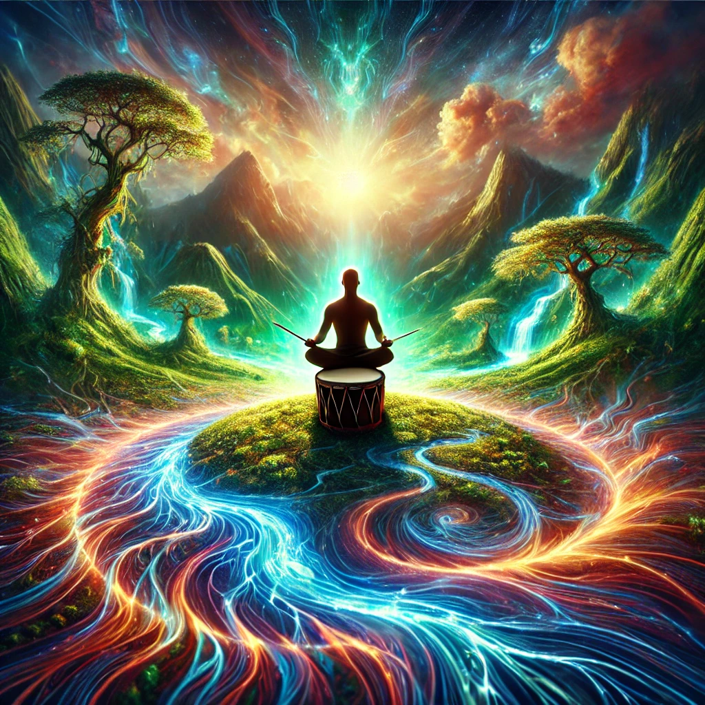

The rhythm of the drum pulls you deeper into connection with the Earth. You close your eyes and feel the ground beneath you pulse with life. Each beat of the drum syncs with the vibrations of the soil, the whisper of the wind, and the distant roar of rivers.
As the sound envelops you, the spirits fade, replaced by a vivid vision of the Earth’s energy. The land around you transforms: lush forests spring to life, rivers flow with iridescent light, and towering mountains hum with ancient songs.
“The Earth speaks in cycles,” a voice whispers within the vision. “To walk her path is to feel her breath, her heartbeat, her eternal flow. What will you seek from this connection?”

What do you focus on?